Project & Contract Management Leader. Bridging technical depth and MBA-driven commercial discipline to maximise value in capital projects across the energy, mining, and telecom sectors.
A leader who connects technical decisions to business priorities, and keeps complex delivery visible, governed and measurable.
More than a decade of documented experience across engineering and project environments. Evidence-led decisions under real delivery constraints.
Electrical engineering depth reinforced by MBA-level commercial and strategic discipline. Technical credibility translated into business value.
Measurable outcomes, clear governance and direct reporting from risk through execution. Accountability stakeholders can see and trust.
Cut costs by 4% on a turnkey EPC contract of about USD 80M (a 220 kV substation and three 2x220 kV lines, about 276 km and 610 structures) by negotiating terms with international suppliers from nine countries and administering 39 local and international subcontracts. Payment approvals ran over 30% faster through sequential invoicing orders and checklists, and strategic claim resolution reduced initially charged costs by 90%.
Lifted team efficiency by about 20% by reorganising the PMO of a critical SIC and SING interconnection, with a master schedule, weekly progress sheets and dashboards, and energised the works in October 2017 ahead of the December 2017 contractual milestone, with no fatal or lost-time accidents. Negotiated about 10 change orders (about USD 1.8M) recovered from the client at cost plus 20% without moving the energisation date, and cut reporting errors by 25% through standardised formats and quality control.
Gave the owner timely information on critical risks by designing and running the PMO for a line of about 120 km and 376 structures (2015 to 2017), with a WBS, master schedule, control curves and cost forecasts, and site access to 293 of 376 structures by August 2015. Flagged to the Board a gap of about USD 2.83M in supplies not procured on schedule and about USD 0.7M of easement cost impact, through 12 alert reports with risk analysis and cost control.
Met all start-up objectives by leading a multicultural team of 5 engineers through about 160 tendering and purchasing processes (136 awarded, about 85%); the service was accepted with no observations on 25 November 2016. Drafting technical bases in-house brought awards to about 31 days versus about 71 days when the user area drafted them (sample of 5 tenders each).
Exposed gaps in payment control by directing the review of 35 contracts and 176 payment statements: 40% lacked approval signatures and 19% of folders were not held by the Projects unit, and each gap was handed over with an owner for the fix. Also directed the independent analysis of a CLP 1,386.7M contractor claim, recommending recognition of CLP 627.2M (45% of the amount claimed); the client extended the service three times and it closed with final acceptance and no comments.
CAPEX consolidation across the portfolio, bid evaluations in competitive tenders, procurement management for a State-owned mining company, and organisational design and asset valuation (CMP, LCOD, SQM, Collahuasi).
Claro Chile: enterprise customer base moved onto a modernized platform in a single quarter. Entel: manual back-office workflows replaced with automated, tooling-driven pipelines.
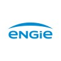
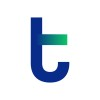
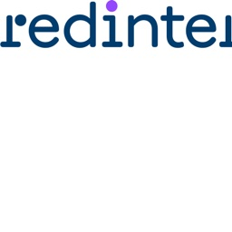
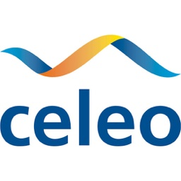
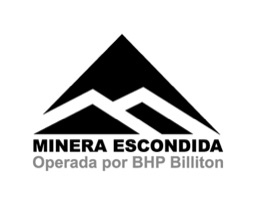
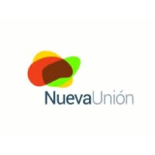
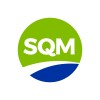
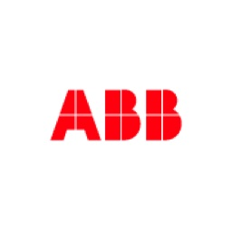
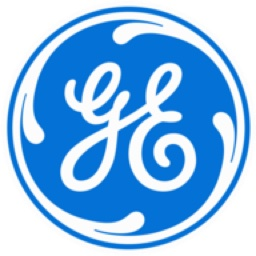
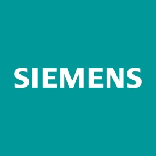
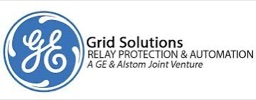
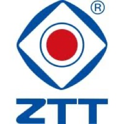
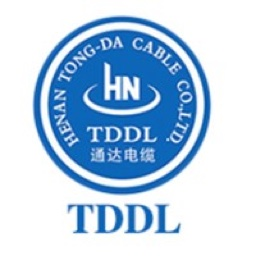
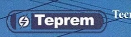
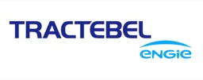
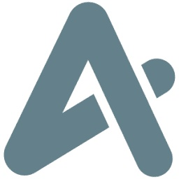
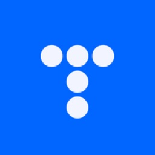
A progression from project delivery to contract leadership and independent advisory.
Six years in project delivery leadership.
Commercial and contractual accountability.
Ongoing independent practice since October 2020.
Focused MBA engagement completed alongside consulting work.
“I have had the privilege of working with Raúl at the Pontificia Universidad Católica de Chile, and he was a top contributing professional in several projects we developed together. I can say with absolute certainty that Raúl is very capable of project and team leadership. I was often impressed by his ability to step in and rally the team during challenging periods. His skills in engineering are among the best I have seen in my 25-year career.”
“Your professionalism and positive attitude create a great working environment, always being collaborative with others. You consistently handle challenging situations with professionalism.”
“Raúl is an excellent professional and a very personable person. He was my counterpart at the telecommunications company Claro, where I was his client. Great teamwork, and excellent management of time and workload.”
I bring control, commercial protection and coordination to keep complex projects on time and on budget, and available for international project delivery roles.